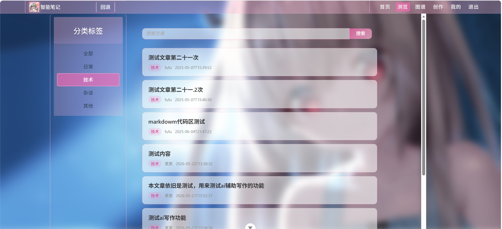
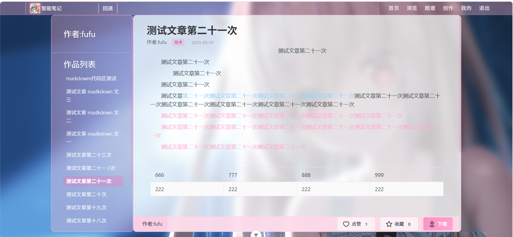
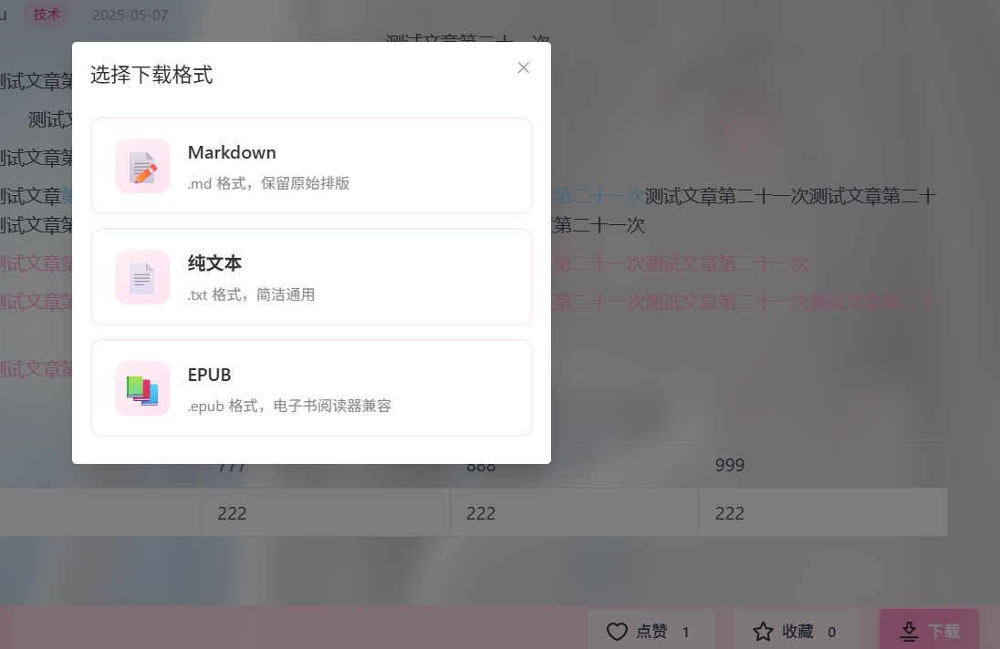
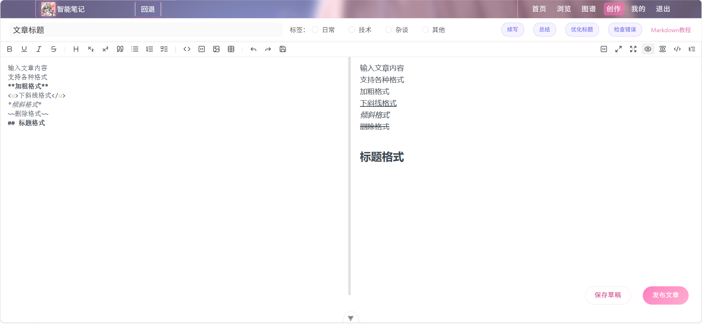
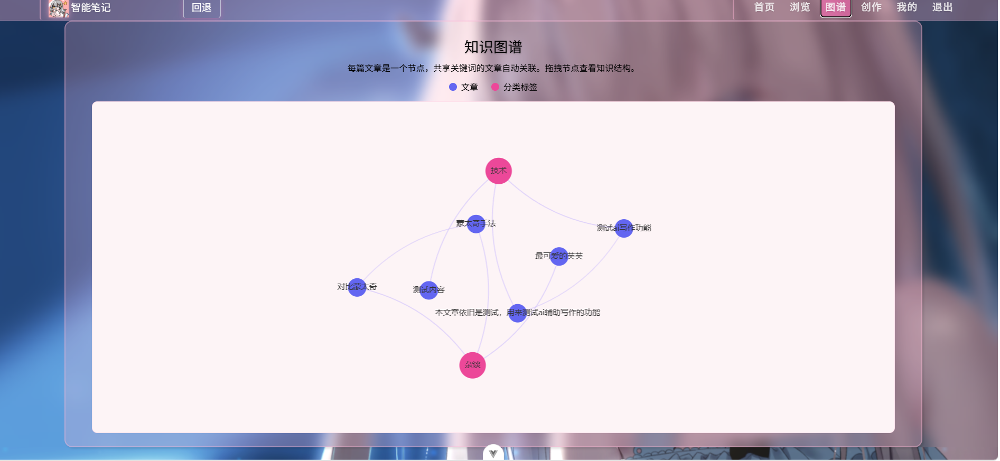
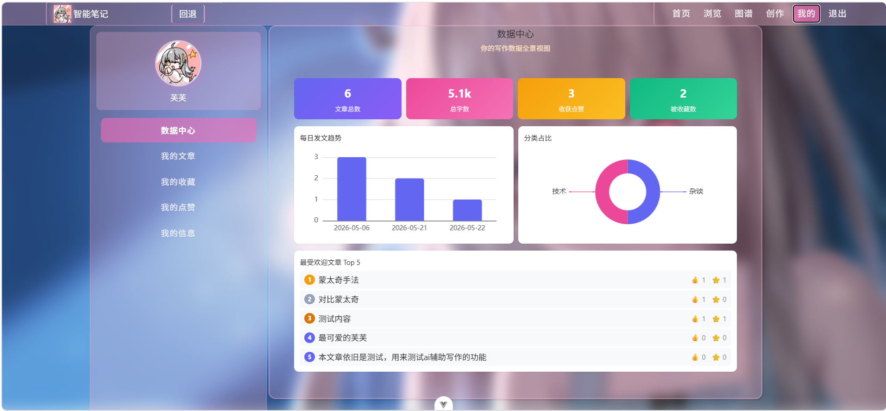

| 答辩人 | ××× |
| 指导教师 | ××× |
| 所属院系 | ×××学院 |
| 答辩日期 | 2026年××月 |
短视频、自媒体、在线文档等平台广泛流行，人们已习惯于在各处记录想法与知识。用户生成内容（UGC）呈现爆发式增长，知识的生产和传播方式发生了根本性变化。
知识以碎片化形式散落在不同平台、不同时间节点之中——视频笔记、博客收藏、聊天记录、零散草稿各自孤立。内容虽多，却难以形成系统性的知识体系。
随着积累的知识内容日益庞大，对碎片化知识进行系统性整理与结构化管理的需求持续递增。个人知识管理——跨情境捕获、分类、检索和回顾已积累的知识——正在成为越来越多人的刚性需求。
前端Vue3/React、后端SpringBoot等Web开发框架高度成熟，大语言模型API逐步开放，数据可视化工具（如ECharts）日益完善——为构建智能化的个人知识管理平台提供了充足的技术支撑。
| 类型 | 代表产品 | 核心特点 | 主要不足 |
|---|---|---|---|
| 服务型平台 | Notion、语雀、飞书文档、有道云笔记 | 功能丰富、协作便捷、多端同步 | 数据存储于第三方服务器，存在隐私风险；平台政策变动或停运将导致数据不可控；免费额度有限 |
| 开源框架 | Halo、Typecho、WordPress | 可自行部署、数据掌握在自己手中 | 以博客发布为主，缺少笔记管理闭环；缺乏AI辅助写作功能；需要一定的技术门槛进行部署维护 |
| 本地笔记工具 | Obsidian、思源笔记、Joplin | 本地优先、Markdown原生支持、插件生态 | 侧重单篇编辑体验，知识结构化分析能力不足；缺少写作数据分析与可视化呈现 |
现有方案在数据自主可控（第三方平台）、AI辅助写作（缺乏智能化）和知识结构化分析与可视化（缺少图谱/仪表盘）三个方向上仍存在明显不足，本系统针对这三个缺口进行设计。
内容散落在视频平台、博客、聊天记录、本地草稿等多个载体中，格式不统一、版本混乱、检索困难。用户花费大量时间在"找笔记"而非"用笔记"。
主流笔记平台将数据存储在云端服务器，用户无法完全掌控自己的数据。平台政策调整、服务停运或数据泄露等风险始终存在，用户对数据的所有权和支配权得不到保障。
现有多数工具仅提供基础的编辑与存储能力，缺少AI辅助写作功能（如续写、总结、标题润色）和基于数据洞察的写作分析，创作效率和知识管理深度受到限制。
针对碎片化：统一平台集中管理全部笔记内容，通过分类标签、全文搜索和分页浏览实现高效检索。
针对数据不可控：全部数据存储在用户自有数据库中，采用JWT无状态认证和BCrypt加密保障安全。
针对缺乏智能化：集成大语言模型API提供续写、总结、标题优化等AI辅助能力；通过知识图谱与写作仪表盘将数据结构化呈现。
设计并实现一个数据自主可控、功能完备的智能笔记系统。该系统需要：
验证了 Vue3 + SpringBoot + MyBatis 技术组合在个人知识管理场景中的可行性与工程化实施路径，为同类系统的开发提供技术参考。
为个人创作者提供一个安全、高效、智能的内容管理平台，解决数据自主可控与知识结构化的实际痛点，降低AI辅助写作的使用门槛。
推动个人知识管理工具的智能化发展，促进知识的系统化整理与分享传播，助力终身学习与知识积累。
展示层、业务层、持久层各司其职，层间通过接口通信，降低耦合度，便于维护与扩展。
前端专注界面交互与用户体检，后端专注业务逻辑与数据处理，两者独立开发、独立部署，通过HTTP协议通信。
采用JWT令牌机制，服务端不存储会话信息，每次请求携带令牌完成身份校验，支持水平扩展。
密码经BCrypt加盐哈希后存储，敏感接口通过拦截器验证JWT令牌，防止未授权访问。
邮箱注册 / 账号登录 / JWT令牌校验 / 密码BCrypt加密 / 全局登录状态管理
五大分类标签筛选 / 关键词模糊搜索 / 分页展示 / 文章标题跳转
Markdown渲染 / 评论发布删除 / 点赞收藏切换 / 多格式文件下载
富文本编辑器 / AI续写总结标题优化 / 草稿本地暂存 / 在线发布编辑
关键词提取 / 力导向图可视化 / 写作数据多维度统计图表
头像上传 / 信息编辑 / 我的文章·收藏·点赞分页管理
| 层次 | 技术 | 版本 | 选型理由 |
|---|---|---|---|
| 前端 | Vue 3 | 3.x | 组合式API提升逻辑复用性，响应式系统性能优异，社区活跃 |
| Element Plus | 2.x | 成熟的Vue3组件库，提供表格、表单、分页等丰富UI组件 | |
| 前端工具 | ECharts | 5.x | 支持力导向图、柱状图、饼图等20+图表类型，配置式开发效率高 |
| Axios | 1.x | 基于Promise的HTTP客户端，支持请求拦截与响应拦截 | |
| 后端 | Spring Boot 3 | 3.x | 简化Spring应用搭建，内嵌Tomcat，自动配置，开发效率高 |
| MyBatis | 3.x | 灵活的SQL映射框架，支持注解和XML两种方式，对复杂查询友好 | |
| 数据库 | MySQL | 8.x | 成熟的关系型数据库，事务支持完善，社区资源丰富 |
| 编辑器 | wangEditor | 5.x | 开源Web富文本编辑器，轻量级、易集成、支持Markdown |
全部采用开源免费技术，降低开发与部署成本；优先选择社区活跃、文档完善的成熟方案，降低技术风险；前后端均采用主流框架，便于后续维护与扩展。
| 数据表 | 核心字段 | 说明 |
|---|---|---|
| user 用户表 | id, name, email, password, phone, avatar, signature | 密码经BCrypt加密存储 |
| article 文章表 | id, article_title, article_sign, article_content, author_id, likes, favorites, create_time | 正文以Markdown源文本存储 |
| comment 评论表 | id, article_id, user_id, user_name, content, create_time | 关联文章与用户信息 |
| likes 点赞表 | id, user_id, article_id | 用户-文章点赞关联 |
| favorites 收藏表 | id, user_id, article_id | 用户-文章收藏关联 |
点赞与收藏采用独立的关联表记录用户-文章对应关系。添加时为INSERT操作，取消时为DELETE操作，同时更新文章表中的计数字段，保持数据一致性。
文章正文以Markdown原始格式存入数据库，不做二次编码或HTML转换。前端使用预览组件在浏览器端实时渲染，下载时按需转换格式。
通过计算偏移量实现手动分页：每次请求携带当前页码，后端计算LIMIT起始位置并额外执行COUNT查询获取总条数，两者封装后返回。
登录成功后生成JWT令牌（含用户标识、有效期1小时），前端存入localStorage。后续请求在请求头中携带令牌，后端拦截器校验通过后放行。
用户注册和登录时密码不传输明文哈希值，由后端使用BCrypt算法进行加盐哈希处理。比对时调用BCrypt的验证方法，而非明文比较。
注册、登录、文章查询、评论列表等公开接口列入白名单直接放行；创作、点赞、收藏、下载等操作类接口需要校验JWT令牌。
浏览首页 → 按分类/关键词浏览文章 → 点击标题阅读正文 → 查看评论 → 注册/登录获取完整权限
登录 → 浏览/搜索文章 → 阅读互动（评论/点赞/收藏/下载）→ 创作文章（AI辅助写作）→ 发布 → 查看知识图谱与仪表盘分析
个人中心 → 我的文章 → 点击编辑 → 自动加载原文 → 修订 → 提交更新 → 返回文章列表
| 角色 | 权限 |
|---|---|
| 游客 | 浏览文章、阅读内容、查看评论 |
| 注册用户 | 全部功能：创作、互动、下载、数据分析 |




根据当前文章上下文继续生成内容，追加到编辑器末尾
自动提炼文章核心观点与要点，追加到编辑器末尾
生成多条标题建议，以弹窗形式展示供用户参考选择
排查文中的错别字与语法问题，以弹窗形式呈现检测结果
所有AI功能按钮在请求期间显示加载动画，防止重复点击
结果呈现方式因功能而异：续写/总结追加显示，优化标题/错误检测弹窗呈现

| 统计指标 | 数据来源 | 呈现方式 |
|---|---|---|
| 文章总数 | COUNT(id)聚合 | 渐变色数据卡片 |
| 总字数 | SUM(LENGTH)聚合 | 渐变色数据卡片（含单位换算） |
| 收获点赞数 | SUM(likes)聚合 | 渐变色数据卡片 |
| 被收藏数 | SUM(favorites)聚合 | 渐变色数据卡片 |
| 每日发文趋势 | GROUP BY create_time | 柱状图 |
| 文章分类占比 | GROUP BY article_sign | 环形饼图 |
| 热门文章TOP5 | ORDER BY likes DESC | 排行列表 |

查看/编辑双模式切换，头像上传支持JPG/PNG/GIF格式，文件大小不超过2MB，后端UUID重命名防冲突后保存至本地目录。
按作者查询文章列表，每篇提供编辑（跳转创作页+加载原文）和删除（确认弹窗+后端验证归属）按钮，支持分页浏览。
分别通过收藏关联表和点赞关联表JOIN文章表查询，以卡片列表展示，点击标题可跳转文章详情页，支持分页。
| 测试模块 | 测试项 | 结果 |
|---|---|---|
| 登录注册 | 正确/错误/空值/重复 共9组 | ✅ |
| 首页导航 | 5卡片跳转 + 回退 共10步 | ✅ |
| 文章浏览 | 5标签 + 搜索 + 分页 共8步 | ✅ |
| 文章详情 | 切换/评论/点赞/收藏/下载 共11步 | ✅ |
| AI写作 | 续写/总结/标题/纠错/草稿/发布 共10步 | ✅ |
| 个人中心 | 信息编辑/文章管理/收藏点赞 共13步 | ✅ |
全部模块测试通过，系统运行稳定可靠
① 基于 SpringBoot + Vue3 + MyBatis + MySQL 技术栈完成了个人智能笔记系统的前后端全流程开发
② 实现了 Markdown 在线编辑、分类检索、评论互动、点赞收藏、多格式下载（MD/TXT/EPUB）等完整功能链
③ 接入大语言模型 API，完成了续写、总结、标题优化与错误检测四项 AI 辅助写作功能
④ 通过标题关键词提取与关联匹配构建知识网络，以力导向图与写作仪表盘实现数据可视化分析
⑤ 经数十组测试用例验证，各模块运行稳定，核心业务流程均正常完成
数据自主可控（自有数据库） · AI辅助写作（大模型API集成） · 知识图谱（力导向图可视化）
当前使用滑动窗口分词匹配，精度有限。后续可引入 TF-IDF 或 NLP 词频统计算法，提升知识图谱的关联质量与准确性。
目前支持续写、总结、标题优化、错误检测四项功能。下一步可扩展写作风格调整、智能标签推荐、大纲生成等能力。
当前系统仅支持 PC 端浏览器访问。后续可引入响应式布局设计，适配平板与手机端，提升移动场景下的使用便捷性。
衷心感谢姜靓老师在本论文选题、方案设计与撰写过程中的悉心指导
感谢各位评审老师在百忙之中对本文的审阅与指正
感谢家人的支持与陪伴，让我能够心无旁骛地完成学业
感谢大学四年间所有授课老师的教导与帮助